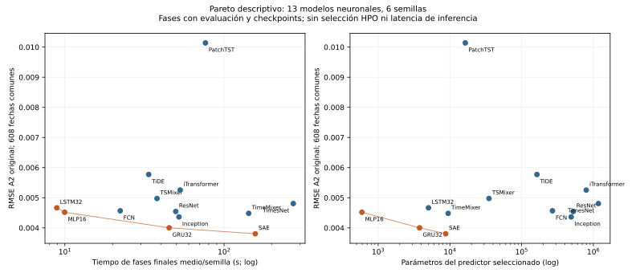

51. Eficiencia, coste observado y compromisos de Pareto#
Los registros originales permiten cuantificar el coste de las fases de entrenamiento de los 78 ajustes finales: 5 765,09 s (1,6014 h), sumados sobre 13 modelos y seis semillas. Esta cantidad corresponde a fases instrumentadas del entrenamiento final. El presupuesto contable cerrado de la campaña es 74,9530 h de 80 h autorizadas e incluye historia previa, trabajos y tiempo del controlador. Las dos cifras describen ámbitos diferentes y no se suman.
Esta auditoría es posterior al cierre: lee metadatos, verifica hashes y conserva la tabla A2 original. No entrena modelos, descarga pesos, ejecuta inferencias ni vuelve a calcular sus métricas. Los resultados siguen vinculados al commit científico 1e8745497b484518f766b6da5c19be8362d9add7 y al commit inmutable de resultados 50cb634e9eb163b09f9607982842144ba9f74c87.
Qué se midió#
Se verificaron los manifiestos y los metadatos de 78 ajustes finales y 39 ajustes HPO de las recetas finalmente elegidas, además de la identidad de los 81 checkpoints congelados. En los modelos neuronales, cada coste final se vincula al hash del checkpoint congelado que originó la evaluación A2. Los tres predictores deterministas permanecen en el inventario de calidad, con recursos desconocidos representados como null.
El tiempo utilizado es phase_records[*].elapsed_seconds, coincidente con known_cost_seconds: reloj de pared con sincronización CUDA. Incluye actualizaciones, evaluación del riesgo durante las épocas y escritura durable de checkpoints. Excluye la búsqueda de hiperparámetros, la persistencia de predicciones finales y el controlador exterior. Por tanto, no mide exclusivamente kernels del optimizador ni latencia de inferencia. Los pasos son actualizaciones observadas del optimizador y se suman entre fases.
Todos los ajustes finales instrumentados se ejecutaron en NVIDIA A100-SXM4-80GB, con dos hilos CPU, precisión float32, determinismo activado y AMP/TF32 desactivados, según sus registros. La columna de parámetros cuenta el predictor seleccionado; en SAE, los decodificadores auxiliares de preentrenamiento no forman parte de ese predictor. El coste temporal sí incluye ambas fases auxiliares y la supervisada.
Resultado por modelo#
La calidad es el RMSE A2 original, media de seis semillas sobre las 608 fechas comunes. El tiempo medio y su desviación estándar muestral describen variación entre semillas, con recetas y números de épocas ya congelados. Los pasos por semilla coinciden en las seis ejecuciones finales de cada modelo. La última columna es solamente la suma de los tres ajustes internos de la receta ganadora; no estima el coste completo de seleccionarla.
Modelo |
Parámetros |
RMSE A2 |
Tiempo final/semilla, s (media ± DE) |
Tiempo final, suma 6 semillas, s |
Pasos/semilla, todas las fases |
HPO de receta elegida, s |
|---|---|---|---|---|---|---|
FCN-1D |
268,929 |
0.004566 |
22.28 ± 0.18 |
133.68 |
1,312 |
61.94 |
ResNet-1D |
522,955 |
0.004544 |
49.72 ± 0.55 |
298.32 |
1,148 |
144.59 |
Inception-1D |
490,561 |
0.004362 |
52.09 ± 0.31 |
312.53 |
1,050 |
156.17 |
SAE (LSTM-autoencoder con predictor) |
8,739 |
0.003803 |
157.08 ± 1.07 |
942.49 |
17,507 |
376.32 |
TimesNet |
1,173,099 |
0.004805 |
271.95 ± 2.21 |
1631.69 |
1,435 |
1016.65 |
TSMixer |
35,044 |
0.004975 |
37.92 ± 0.28 |
227.52 |
882 |
143.36 |
TiDE |
163,384 |
0.005772 |
33.62 ± 0.20 |
201.72 |
1,681 |
121.81 |
TimeMixer |
9,447 |
0.004481 |
142.72 ± 0.54 |
856.33 |
2,706 |
402.81 |
PatchTST |
16,388 |
0.010139 |
76.38 ± 0.36 |
458.30 |
1,927 |
256.00 |
iTransformer |
795,403 |
0.005254 |
53.01 ± 0.23 |
318.04 |
1,845 |
199.84 |
MLP16 |
593 |
0.004517 |
9.98 ± 0.13 |
59.85 |
1,197 |
28.56 |
LSTM32 |
5,025 |
0.004664 |
8.90 ± 0.14 |
53.41 |
682 |
21.11 |
GRU32 |
3,777 |
0.004001 |
45.20 ± 0.16 |
271.20 |
5,863 |
78.67 |
En SAE, la suma de seis semillas se descompone en 373,79 s para AE1, 378,45 s para AE2 y 190,25 s para la fase supervisada, total 942,49 s. Omitir el preentrenamiento reduciría indebidamente su coste reportado. Las demás arquitecturas tienen una fase supervisada.
Los 39 ajustes HPO seleccionados suman 3 007,84 s (0,8355 h). Proceden de tres orígenes internos (2024-01-01, 2024-07-01, 2024-10-01) y una semilla de optimización (271201). Su temporización mezcla A100, Tesla T4 y diez resultados históricos admitidos desde caché, con políticas de checkpoints distintas. Esta suma es descriptiva de los registros recuperados: no permite ordenar arquitecturas por eficiencia de búsqueda. full_selection_seconds queda en null para todos los modelos porque este inventario no contiene una atribución exhaustiva de todas las configuraciones y operaciones previas a la selección.
Pareto observado#

Figura 1 Compromisos descriptivos entre error y coste. El eje temporal incluye evaluación y checkpoints. Los predictores deterministas carecen de medidas de recursos comparables y quedan fuera de ambas fronteras.#
Se minimizan simultáneamente RMSE y coste. Un modelo domina a otro si no empeora ninguna coordenada y mejora al menos una. Con tiempo final medio por semilla, la frontera observada contiene LSTM32, MLP16, GRU32 y SAE. Con parámetros, contiene MLP16, GRU32 y SAE. SAE obtiene el menor RMSE puntual; MLP16 emplea menos parámetros y GRU32 ofrece un compromiso intermedio. LSTM32 entra en la frontera temporal por su menor tiempo observado, pero GRU32 lo domina en error y parámetros.
Estas fronteras dependen de las recetas elegidas y de la carga final congelada: distintos números de épocas y, para SAE, tres fases. La figura no es una comparación a igual número de actualizaciones ni a igual presupuesto de búsqueda. La dominancia es sobre estimaciones puntuales: no demuestra superioridad estadística ni incorpora incertidumbre de la selección. Una media de RMSE entre seis semillas describe los seis predictores evaluados individualmente; no es el error de un ensamble.
Persistence, SeasonalNaive y ARIMA conservan sus resultados A2 originales y una ejecución determinista por sistema. Sus tiempos y parámetros comparables no están presentes en esta evidencia. Se mantienen como desconocidos; asignarles coste cero fabricaría una frontera distinta.
Presupuesto medido y reservas#
La auditoría vuelve a verificar los 1 368 eventos de la cadena del ledger y su último hash 9cef7a0b5a295c55051fd3279cfd7493efe3cedde53545dee8fb3398971db9ba. Las 329 reservas están cerradas. El total autorizado de 80 h constituye un límite, no una medición del consumo.
Componente contable |
Segundos |
Horas |
Interpretación |
|---|---|---|---|
Cargos históricos heredados |
222 927,99 |
61,9244 |
Historia anterior incorporada al ledger |
Trabajadores del ledger actual |
35 387,88 |
9,8300 |
Tiempo cargado de trabajos actuales |
Controlador y overhead actuales |
11 515,04 |
3,1986 |
Tiempo registrado fuera de trabajadores |
Total cargado cerrado |
269 830,91 |
74,9530 |
Suma de los tres componentes anteriores |
Saldo frente al límite autorizado |
18 169,09 |
5,0470 |
Presupuesto disponible al cierre |
La suma de reservas por intento es 597 540 s (165,9833 h): son techos sucesivos de admisión, no horas consumidas. No se incorpora esa suma al total cargado. Ni el total contable ni la duración de las fases equivalen a GPU-horas activas, consumo eléctrico o importe monetario. No hay una tarifa y telemetría energética verificadas; esos campos permanecen en null.
Memoria, inferencia y límites de la evidencia#
Los registros finales contienen máximos observados de memoria CUDA asignada/reservada y RSS, conservados en el CSV por fase. El campo de alcance CUDA es since_callers_last_reset: se trata de máximos del proceso desde el último reinicio del contador. No constituyen una medición aislada de memoria de cada predictor ni memoria de inferencia. El límite del allocator del 80 % de VRAM es un umbral registrado de admisión, no el pico medido ni una cuota física impuesta.
No existen temporizaciones aisladas de inferencia en los archivos originales de predicciones utilizados aquí. Sus campos inference_seconds, inference_latency_ms y FLOPs conservan null; no se deducen del número de parámetros ni del tiempo de entrenamiento. La medición posterior de §54 ya aporta 78 perfiles reales de los predictores congelados en A100, con entrada D7 residente, batch1, calentamiento y eventos CUDA. Se mantiene como evidencia nueva con hardware y alcance propios; no reescribe esos campos históricos. §58 añade el conteo posterior de matrices y convoluciones de las trece recetas, con operaciones excluidas declaradas; no se atribuye al registro original ni equivale a FLOPs totales de todos los kernels.
Artefactos y reproducción#
Los archivos descargables conservan el detalle y sus límites:
Pareto SVG y PNG.


El colector scripts/collect_e2_efficiency_evidence.py opera sin red y requiere el inventario original de entrenamiento, los dos ZIP de metadatos y el ledger cerrado. Verifica bytes, SHA256, identidad de recetas y checkpoints, seis semillas completas, fases y pasos reconciliados y la cadena contable. scripts/collect_e2_f2a_training_evidence.py reconstruye las identidades registradas de los ajustes HPO sin importar código de entrenamiento. Los orígenes inmutables y hashes de cada fuente se conservan en source_evidence.json.
python scripts/collect_e2_efficiency_evidence.py \
--training-evidence /workspace/outputs/e2-f2a-audit-20261113/training_evidence \
--metadata-dir /tmp/e2-final-evidence-meta \
--ledger /tmp/e2-final-evidence-meta/terminal_budget.jsonl \
--output-dir /workspace/outputs/e2-guide-closure-20261113/efficiency
python -m unittest discover -s tests -p test_e2_efficiency_evidence.py -v